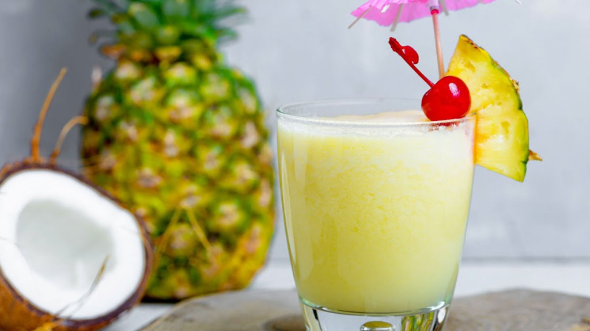

Drink de Abacaxi
Este drink refrescante combina abacaxi, hortelã e rum branco. É perfeito para dias quentes de verão!
Ver receitaSeja bem-vindo ao nosso site de receitas de drinks clássicos & tropicais! Aqui você encontrará uma variedade de receitas deliciosas e refrescantes para experimentar.
Este drink refrescante combina abacaxi, hortelã e rum branco. É perfeito para dias quentes de verão!
Ver receitaEsta caipirinha é uma deliciosa mistura de maracujá e cachaça. É uma ótima opção para quem quer experimentar um drink brasileiro tradicional.
Ver receitaEste drink de morango é doce e refrescante, perfeito para um happy hour com amigos.
Ver receitaAlém de compartilhar receitas de drinks, nosso site também oferece um ebook exclusivo com uma grande variedade de receitas de drinks para você experimentar. Uma das vantagens de ter acesso a esse ebook é a praticidade e facilidade que ele proporciona, pois você pode acessá-lo em seu celular a qualquer hora e em qualquer lugar, tornando a preparação de drinks mais fácil e acessível. Com o ebook, você terá acesso a receitas de drinks deliciosos e refrescantes, com ingredientes fáceis de encontrar em qualquer mercado ou loja de bebidas. Além disso, o ebook também contém dicas e truques para tornar a preparação dos drinks ainda mais fácil e divertida. Portanto, se você é um amante de drinks e quer experimentar novas receitas, adquirir nosso ebook é uma ótima opção para ter acesso a uma grande variedade de receitas em seu celular, o que tornará a preparação de drinks ainda mais fácil e conveniente.
Neste ebook, você encontrará uma coleção de receitas deliciosas e fáceis de fazer para uma variedade de bebidas, desde os coquetéis clássicos que todos conhecem e amam até os sabores exóticos e tropicais que são perfeitos para um dia ensolarado na praia. Aprenda a fazer uma margarita perfeita ou um mojito refrescante, ou experimente algo novo com nossas receitas de drinks menos conhecidos, mas igualmente deliciosos. Com nossas dicas úteis e técnicas de mixologia, você se tornará um mestre na arte de fazer drinks e impressionará seus amigos e familiares em qualquer ocasião. Então, pegue sua coqueteleira e prepare-se para saborear alguns dos melhores drinks já criados!
Compre agora